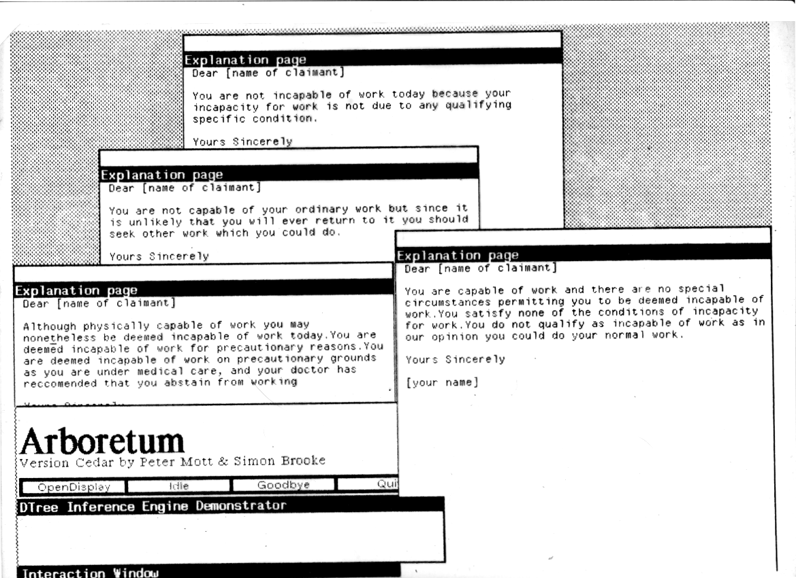

TODO: To be scanned from chapter iv of the 21st June 1988 draft.

Arboretum screen showing a number of generated explanations. This picture was scanned from a 32 year old acetate slide, apologies for quality